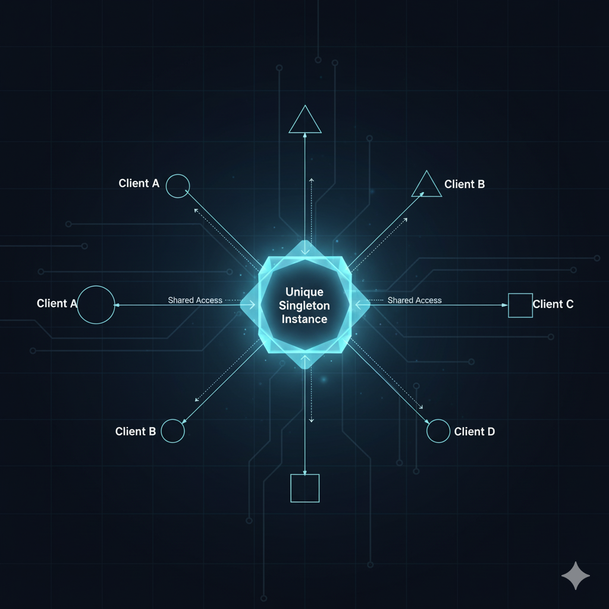
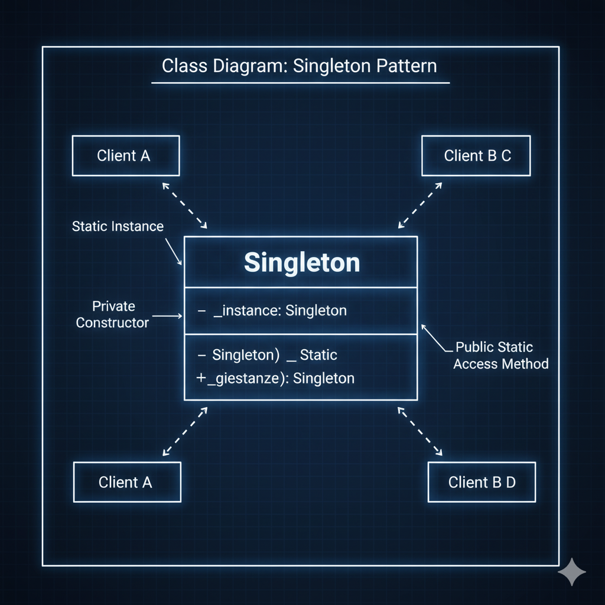

Introducción: Un Solo Rey para Gobernarlos a Todos
Imagina que estás desarrollando una aplicación y necesitas un gestor de configuración. Ese gestor debe cargar los settings una sola vez, mantenerlos en memoria, y proporcionar acceso a ellos desde cualquier parte de tu código. ¿Cuántas instancias de ese gestor necesitas?
Una. Solo una.
Si creas dos instancias, duplicas la carga de configuración. Si creas tres, multiplicas el consumo de memoria innecesariamente. Y si cada componente crea su propia instancia, tu aplicación se convierte en un caos de configuraciones potencialmente inconsistentes.
Esta es precisamente la situación que resuelve el Patrón Singleton: garantizar que una clase tenga exactamente una instancia y proporcionar un punto de acceso global a ella.
El Singleton es el más simple y a la vez el más controvertido de los patrones creacionales del Gang of Four. Simple porque su implementación básica son pocas líneas de código. Controvertido porque su mal uso puede convertirse en un antipatrón que introduce acoplamiento global y dificulta las pruebas unitarias.
En esta guía completa aprenderás:
- Cómo el patrón se manifiesta naturalmente en nuestro universo.
- Múltiples implementaciones en C#: básica, thread-safe y con
Lazy<T>. - Cuándo usarlo (y más importante, cuándo NO usarlo).
- Cómo implementar un Singleton correctamente en aplicaciones multihilo modernas.

Prompt: Ilustración conceptual minimalista del Patrón Singleton mostrando una sola instancia centralizada con múltiples accesos.
1. El Sol: Singleton en el Sistema Solar
La naturaleza nos proporciona el ejemplo perfecto de un Singleton: nuestro Sol.
Un Sistema, Una Estrella
En nuestro sistema solar existe exactamente una estrella. No dos soles, no tres. Uno solo. Todos los planetas orbitan alrededor de esta única instancia. La Tierra no pregunta "¿cuál de los soles debo seguir?" porque solo hay uno.
¿Qué pasaría si tuviéramos dos soles? El sistema completo colapsaría. Las órbitas se desestabilizarían, las estaciones cambiarían caóticamente, la vida tal como la conocemos sería imposible.
Características del Sol como Singleton
- Instancia Única: Solo existe un Sol en nuestro sistema solar.
- Acceso Global: Todos los planetas pueden "acceder" al Sol (recibir su luz y gravedad).
- Recurso Compartido: Todos comparten la misma fuente de energía y gravedad.
- Inicialización Única: El Sol se formó una vez, hace aproximadamente 4.6 mil millones de años.
- Punto Central: Todo el sistema depende y gira alrededor de esta única instancia.
La Analogía con el Código
En tu aplicación, ciertos recursos deben comportarse como el Sol:
- Un gestor de logs: todos los componentes escriben en el mismo archivo de log.
- Un pool de conexiones: una única instancia administra todas las conexiones a la base de datos.
- Un gestor de caché: todos acceden a la misma memoria caché.
Si cada componente creara su propio "Sol" (su propia instancia de logger, por ejemplo), terminarías con múltiples archivos de log fragmentados, imposibles de analizar coherentemente. El Singleton garantiza que solo hay un Sol.
Prompt: Ilustración del sistema solar con el Sol en el centro y planetas orbitando, representando el concepto de instancia única del patrón Singleton.
2. El Patrón en tu Día a Día: El Presidente del Gobierno
Llevemos el concepto al mundo real de las instituciones humanas.
Un País, Un Presidente
En un país democrático existe un solo Presidente del Gobierno a la vez. No dos presidentes compitiendo por firmar leyes. No tres presidentes cada uno con su propia política exterior.
Imagina el caos si hubiera múltiples "instancias" del cargo:
- El Ministro de Economía consulta al "Presidente A" sobre el presupuesto.
- El Ministro de Defensa recibe órdenes del "Presidente B".
- La comunidad internacional negocia con el "Presidente C".
El resultado sería anarquía institucional. Por eso existe una única instancia del cargo, accesible desde todos los ministerios, con una autoridad centralizada.
Acceso Global al Singleton
Todos los ministerios y organismos del Estado acceden a la misma instancia del Presidente. No hay confusión sobre "¿cuál Presidente?". Cuando el Ministro de Sanidad necesita una decisión ejecutiva, sabe exactamente a quién dirigirse.
En términos de código:
- El Presidente = La Instancia Singleton
- Los Ministerios = Diferentes clases/componentes de tu aplicación
- Las Decisiones = Métodos públicos del Singleton
- La Constitución = El constructor privado que previene múltiples instancias
Cambio de Gobierno = Nueva Instancia
Cuando hay elecciones y cambia el gobierno, no se crean dos presidentes simultáneos. El anterior deja el cargo, y entra el nuevo. Siempre hay exactamente uno. Este es exactamente el comportamiento del Singleton: si necesitas "reiniciar" la instancia, destruyes la anterior antes de crear la nueva.
Prompt: Diagrama organizacional mostrando un presidente en el centro con múltiples ministerios conectados, ilustrando el patrón Singleton en gobierno.
3. Implementación en C#: Del Básico al Thread-Safe
Ahora pasemos al código. Implementaremos el Singleton en C# con tres enfoques: básico, thread-safe y moderno con Lazy<T>.
3.1 Singleton Básico (No Thread-Safe) ⚠️
Advertencia: Esta implementación NO es segura en aplicaciones multihilo. La muestro solo con propósitos educativos.
/// <summary>
/// Singleton Básico - NO USAR EN PRODUCCIÓN
/// No es thread-safe. Dos hilos pueden crear dos instancias simultáneamente.
/// </summary>
public class SingletonBasico
{
// La única instancia (inicialmente null)
private static SingletonBasico _instancia;
// Constructor privado: previene new SingletonBasico()
private SingletonBasico()
{
Console.WriteLine("🔨 Instancia de SingletonBasico creada.");
}
// Propiedad pública para obtener la instancia
public static SingletonBasico Instancia
{
get
{
// ⚠️ PROBLEMA: Dos hilos pueden pasar este if simultáneamente
if (_instancia == null)
{
_instancia = new SingletonBasico();
}
return _instancia;
}
}
public void MostrarMensaje()
{
Console.WriteLine("👋 Soy la instancia única (básica).");
}
}¿Qué está mal aquí? En un entorno multihilo, dos threads pueden comprobar _instancia == null al mismo tiempo, y ambos crearán una instancia. Resultado: dos "únicos" Singletons. 💥
3.2 Singleton Thread-Safe con Double-Check Locking
Esta es la implementación clásica thread-safe, usando un lock para sincronizar el acceso.
/// <summary>
/// Singleton Thread-Safe con Double-Check Locking
/// Seguro en aplicaciones multihilo.
/// </summary>
public sealed class SingletonThreadSafe
{
// Instancia única
private static SingletonThreadSafe _instancia;
// Objeto de bloqueo para sincronización
private static readonly object _lock = new object();
// Constructor privado
private SingletonThreadSafe()
{
Console.WriteLine("🔨 Instancia de SingletonThreadSafe creada.");
}
// Propiedad pública thread-safe
public static SingletonThreadSafe Instancia
{
get
{
// Primera comprobación (sin lock) - optimización de rendimiento
if (_instancia == null)
{
// Bloqueo: solo un hilo puede entrar aquí a la vez
lock (_lock)
{
// Segunda comprobación (con lock) - garantiza única instancia
if (_instancia == null)
{
_instancia = new SingletonThreadSafe();
}
}
}
return _instancia;
}
}
public void MostrarMensaje()
{
Console.WriteLine($"👋 Soy la instancia única thread-safe. HashCode: {this.GetHashCode()}");
}
}
// ¿Por qué 'sealed'?
// Para prevenir que una clase herede de nuestro Singleton y rompa la unicidad.Double-Check Locking Explicado:
- Primera comprobación (línea 21): Evita el costo del
lockuna vez creada la instancia. - Lock (línea 24): Sincroniza el acceso. Solo un hilo puede entrar.
- Segunda comprobación (línea 27): Por si otro hilo creó la instancia mientras esperábamos el lock.
3.3 Singleton Moderno con Lazy<T> (Recomendado) ✅
En C# moderno (.NET 4.0+), la forma más elegante y segura es usar Lazy<T>. El CLR maneja toda la sincronización por ti.
/// <summary>
/// Singleton Moderno usando Lazy<T>
/// Thread-safe por defecto. Inicialización perezosa garantizada.
/// ESTA ES LA IMPLEMENTACIÓN RECOMENDADA.
/// </summary>
public sealed class SingletonModerno
{
// Lazy<T> maneja la inicialización thread-safe automáticamente
private static readonly Lazy<SingletonModerno> _lazyInstancia =
new Lazy<SingletonModerno>(() => new SingletonModerno());
// Constructor privado
private SingletonModerno()
{
Console.WriteLine("🔨 Instancia de SingletonModerno creada con Lazy.");
}
// Propiedad pública - accede a .Value de Lazy
public static SingletonModerno Instancia => _lazyInstancia.Value;
public void MostrarMensaje()
{
Console.WriteLine($"👋 Soy el Singleton moderno. HashCode: {this.GetHashCode()}");
}
}
// Ventajas de Lazy<T>:
// ✅ Thread-safe por defecto
// ✅ Inicialización perezosa (solo se crea cuando se accede por primera vez)
// ✅ Código más limpio y legible
// ✅ El CLR optimiza el rendimiento internamente 3.4 Ejemplo Real: Gestor de Configuración
Implementemos un caso de uso real: un gestor de configuración que carga settings desde un archivo JSON una sola vez.
using System;
using System.Collections.Generic;
/// <summary>
/// Gestor de Configuración Singleton
/// Carga la configuración una sola vez y la comparte globalmente.
/// </summary>
public sealed class ConfigurationManager
{
private static readonly Lazy<ConfigurationManager> _lazyInstancia =
new Lazy<ConfigurationManager>(() => new ConfigurationManager());
// Configuración en memoria
private Dictionary<string, string> _config;
private ConfigurationManager()
{
Console.WriteLine("📂 Cargando configuración desde archivo...");
// Simula carga desde archivo
_config = new Dictionary<string, string>
{
{ "DatabaseConnectionString", "Server=localhost;Database=MiApp;" },
{ "ApiKey", "abc123xyz789" },
{ "MaxRetries", "3" },
{ "TimeoutSeconds", "30" }
};
Console.WriteLine("✅ Configuración cargada exitosamente.");
}
public static ConfigurationManager Instancia => _lazyInstancia.Value;
// Obtiene un valor de configuración
public string GetSetting(string key)
{
return _config.ContainsKey(key) ? _config[key] : null;
}
// Actualiza un valor (opcional, según tu caso de uso)
public void UpdateSetting(string key, string value)
{
_config[key] = value;
Console.WriteLine($"🔄 Configuración actualizada: {key} = {value}");
}
}
// === PROGRAMA DE EJEMPLO ===
public class Program
{
public static void Main(string[] args)
{
Console.WriteLine("=== DEMOSTRACIÓN DE SINGLETON ===\n");
// Primera llamada: crea la instancia
Console.WriteLine("--- Primera solicitud de configuración ---");
var config1 = ConfigurationManager.Instancia;
Console.WriteLine($"🔑 API Key: {config1.GetSetting("ApiKey")}");
Console.WriteLine($"HashCode de config1: {config1.GetHashCode()}\n");
// Segunda llamada: reutiliza la misma instancia
Console.WriteLine("--- Segunda solicitud de configuración ---");
var config2 = ConfigurationManager.Instancia;
Console.WriteLine($"🔌 Connection String: {config2.GetSetting("DatabaseConnectionString")}");
Console.WriteLine($"HashCode de config2: {config2.GetHashCode()}\n");
// Tercera llamada desde "otro componente"
Console.WriteLine("--- Tercera solicitud desde otro componente ---");
var config3 = ConfigurationManager.Instancia;
Console.WriteLine($"⏱️ Timeout: {config3.GetSetting("TimeoutSeconds")}s");
Console.WriteLine($"HashCode de config3: {config3.GetHashCode()}\n");
// Verificación: todas son la misma instancia
Console.WriteLine("=== VERIFICACIÓN DE UNICIDAD ===");
Console.WriteLine($"config1 == config2: {config1 == config2}");
Console.WriteLine($"config2 == config3: {config2 == config3}");
Console.WriteLine($"config1 == config3: {config1 == config3}");
Console.WriteLine("\n✅ TODAS son la MISMA instancia. Singleton verificado.");
}
}Salida del Programa:
=== DEMOSTRACIÓN DE SINGLETON ===
--- Primera solicitud de configuración ---
📂 Cargando configuración desde archivo...
✅ Configuración cargada exitosamente.
🔑 API Key: abc123xyz789
HashCode de config1: 46104728
--- Segunda solicitud de configuración ---
🔌 Connection String: Server=localhost;Database=MiApp;
HashCode de config2: 46104728
--- Tercera solicitud desde otro componente ---
⏱️ Timeout: 30s
HashCode de config3: 46104728
=== VERIFICACIÓN DE UNICIDAD ===
config1 == config2: True
config2 == config3: True
config1 == config3: True
✅ TODAS son la MISMA instancia. Singleton verificado.Observa: El mensaje "Cargando configuración..." aparece una sola vez, en la primera llamada. Las tres variables (config1, config2, config3) tienen el mismo HashCode: son la misma instancia en memoria.
4. Singleton vs. Otros Patrones: Diferencias Clave
El Singleton se confunde frecuentemente con otros patrones. Aclaremos las diferencias.
Singleton vs. Static Class (Clase Estática)
Ambos proporcionan acceso global, pero son fundamentalmente diferentes:
| Característica | Singleton | Static Class |
|---|---|---|
| Instancia | Es un objeto real en memoria | No tiene instancia (solo métodos estáticos) |
| Herencia | Puede implementar interfaces y heredar | No puede heredar ni implementar interfaces |
| Lazy Loading | ✅ Se crea cuando se necesita | ❌ Se inicializa al inicio de la app |
| Dependency Injection | ✅ Puede ser inyectada | ❌ No se puede inyectar |
| Testing | ⚠️ Difícil pero posible (con interfaces) | ❌ Muy difícil de mockear |
Cuándo usar cada uno:
- Singleton: Cuando necesitas mantener estado y posiblemente cambiar la implementación (ej: diferentes estrategias de logging).
- Static Class: Para utilidades sin estado que nunca cambiarán (ej:
Math.Sqrt(), validadores).
Singleton vs. Factory Method
- Singleton: Garantiza que solo existe una instancia de una clase específica. Enfocado en controlar la cantidad de instancias.
- Factory Method: Delega la creación de objetos a subclases. Puede crear múltiples instancias de diferentes tipos. Enfocado en desacoplar la creación de objetos.
Ejemplo: Un Singleton sería "solo hay un gestor de logs". Un Factory Method sería "crea el tipo de logger que necesites (archivo, consola, base de datos)".
De hecho, puedes combinarlos: Usar Factory Method para decidir qué tipo de Singleton crear la primera vez.
Singleton vs. Monostate
El patrón Monostate es un patrón menos conocido que logra un objetivo similar con una estrategia opuesta:
- Singleton: Una sola instancia, acceso global a través de
Instancia. - Monostate: Múltiples instancias, pero todas comparten el mismo estado (usando campos estáticos).
// Ejemplo de Monostate (no es Singleton)
public class Monostate
{
// Estado compartido (estático)
private static string _estadoCompartido = "Inicial";
// Constructor público (permite múltiples instancias)
public Monostate() { }
// Propiedad que accede al estado compartido
public string Estado
{
get => _estadoCompartido;
set => _estadoCompartido = value;
}
}
// Uso:
var instancia1 = new Monostate();
var instancia2 = new Monostate();
instancia1.Estado = "Modificado";
Console.WriteLine(instancia2.Estado); // "Modificado" - comparten estadoCon Monostate, instancia1 e instancia2 son objetos diferentes, pero modificar el estado en uno afecta al otro. Es un Singleton "disfrazado".
5. Diagrama UML del Patrón Singleton
El Singleton tiene una de las estructuras UML más simples de todos los patrones Gang of Four:
Definición Formal del Patrón Singleton:
El patrón Singleton garantiza que una clase tenga una única instancia y proporciona un punto de acceso global a ella. Esto se logra mediante un constructor privado y un método estático que retorna siempre la misma instancia.
Elementos del Patrón
- Constructor Privado: Previene la creación de instancias mediante
newdesde fuera de la clase. - Campo Estático Privado: Almacena la única instancia de la clase.
- Método/Propiedad Estática Pública: Proporciona acceso global a la instancia. Si no existe, la crea (lazy initialization).
- Clase Sealed (Opcional pero Recomendado): Previene que otras clases hereden y rompan la unicidad.
Estructura en C#
public sealed class Singleton
{
// 1. Instancia estática privada
private static Singleton _instancia;
// 2. Constructor privado
private Singleton() { }
// 3. Propiedad pública estática
public static Singleton Instancia
{
get
{
if (_instancia == null)
_instancia = new Singleton();
return _instancia;
}
}
// 4. Métodos públicos de negocio
public void HacerAlgo() { }
}Flujo de Ejecución
- Cliente llama a
Singleton.Instancia - Si
_instanciaes null (primera vez), se crea connew Singleton() - La instancia creada se almacena en
_instancia - Se retorna la instancia
- Siguientes llamadas retornan la misma instancia sin crear nuevas

Prompt: Diagrama UML limpio del Patrón Singleton mostrando constructor privado, instancia estática y método getInstance().
⚠️ Cuándo NO Usar el Patrón Singleton
El Singleton es el patrón más debatido del Gang of Four. Muchos desarrolladores lo consideran un antipatrón cuando se usa incorrectamente. Aquí está cuándo debes evitarlo.
Problemas Comunes del Singleton
1. Viola el Principio de Responsabilidad Única (SRP)
Un Singleton tiene dos responsabilidades:
- Su lógica de negocio (ej: gestionar configuración).
- Controlar su propia creación e instanciación.
Esto viola el SRP de SOLID. La clase está haciendo demasiado.
2. Dificulta las Pruebas Unitarias
Los Singletons son notoriamente difíciles de testear porque:
- Crean estado global que se mantiene entre tests.
- No puedes fácilmente "mockear" un Singleton para aislar tests.
- Los tests pueden fallar dependiendo del orden de ejecución.
// ❌ DIFÍCIL DE TESTEAR
public class MiServicio
{
public void ProcesarDatos()
{
var config = ConfigurationManager.Instancia; // ¡Dependencia oculta!
string connString = config.GetSetting("DB");
// ... lógica que usa la conexión
}
}
// ✅ FÁCIL DE TESTEAR (Dependency Injection)
public class MiServicioMejorado
{
private readonly IConfigurationManager _config;
// La dependencia es explícita y puede ser mockeada
public MiServicioMejorado(IConfigurationManager config)
{
_config = config;
}
public void ProcesarDatos()
{
string connString = _config.GetSetting("DB");
// ... lógica
}
}3. Acoplamiento Global
Cualquier clase que use Singleton.Instancia está fuertemente acoplada a esa implementación concreta. Cambiar el Singleton requiere cambiar todo el código que lo usa.
4. Problemas con Multithreading
Si no implementas thread-safety correctamente, puedes terminar con múltiples instancias en aplicaciones concurrentes. Y el double-check locking añade complejidad.
Alternativas Modernas al Singleton
Dependency Injection (DI) - La Mejor Alternativa
En lugar de un Singleton tradicional, usa el contenedor de DI de .NET para registrar servicios como singleton:
// En Startup.cs o Program.cs (ASP.NET Core)
services.AddSingleton<IConfigurationManager, ConfigurationManager>();
// Luego inyectas en el constructor
public class MiController : Controller
{
private readonly IConfigurationManager _config;
public MiController(IConfigurationManager config)
{
_config = config; // El DI container proporciona la misma instancia
}
}Ventajas de DI sobre Singleton manual:
- ✅ Testeable: puedes inyectar mocks.
- ✅ Desacoplado: depende de interfaces, no implementaciones concretas.
- ✅ Explícito: las dependencias son visibles en el constructor.
- ✅ Thread-safe: el contenedor lo maneja automáticamente.
Cuándo SÍ Usar Singleton
Usa Singleton solo cuando:
- Necesitas controlar un recurso físico único (ej: puerto serial, driver de hardware).
- La instancia es inherentemente única por naturaleza del problema.
- No estás usando un framework con DI (aplicaciones de consola pequeñas, scripts).
- El costo de inicialización es muy alto y solo quieres hacerlo una vez (ej: cargar un modelo de ML de 5GB).
Red Flags (Señales de Alarma)
Evita Singleton si:
- ❌ Podrías necesitar múltiples instancias en el futuro (aunque ahora solo usas una).
- ❌ La clase mantiene estado mutable que cambia frecuentemente.
- ❌ Estás en un entorno con DI disponible (usa DI en su lugar).
- ❌ Necesitas testear extensivamente la clase.
- ❌ Estás creando un Singleton "porque sí", sin una razón técnica clara.
💪 Ejercicio Práctico: Sistema de Logging
Implementa un Logger Singleton thread-safe con las siguientes características:
Requisitos
- Implementación Thread-Safe: Usa
Lazy<T>para crear un Singleton seguro. - Niveles de Log: El logger debe soportar diferentes niveles:
INFO: Mensajes informativos.WARNING: Advertencias.ERROR: Errores.DEBUG: Mensajes de depuración.
- Método Log: Un método
Log(LogLevel level, string message)que:- Imprima en consola con formato:
[TIMESTAMP] [LEVEL] mensaje - Ejemplo:
[2025-11-03 14:30:22] [ERROR] Falló la conexión a la base de datos
- Imprima en consola con formato:
- Métodos Convenientes: Crea métodos
LogInfo(),LogWarning(),LogError(),LogDebug(). - Configuración de Nivel Mínimo: Permite configurar un nivel mínimo de logging (por defecto INFO). Si está en INFO, no muestra DEBUG.
Bonus Challenge 🏆
- Nivel 1: Añade colores a la consola según el nivel (INFO=verde, WARNING=amarillo, ERROR=rojo).
- Nivel 2: Además de consola, escribe los logs a un archivo
app.log. - Nivel 3: Implementa un método
GetEstadisticas()que retorne cuántos logs de cada nivel se han generado.
Solución Esperada
Tu logger debe:
- ✅ Ser thread-safe usando
Lazy<T>. - ✅ Mostrar solo logs >= nivel mínimo configurado.
- ✅ Formatear correctamente con timestamp.
- ✅ Tener una única instancia verificable.
Conclusión: La Elegancia de la Unicidad
El Patrón Singleton es como el Sol en nuestro sistema solar: una presencia única, constante y accesible para todos. Cuando lo necesitas, es insustituible. Cuando no lo necesitas, puede convertirse en un problema.
Lo que Aprendimos
- El Singleton garantiza exactamente una instancia de una clase.
- En C# moderno,
Lazy<T>es la forma recomendada de implementarlo (thread-safe automático). - El double-check locking es el enfoque clásico, pero añade complejidad.
- Singleton no es lo mismo que una clase estática (el Singleton es un objeto real).
- En aplicaciones modernas con DI, prefiere registrar servicios como singleton en el contenedor en lugar de implementar el patrón manualmente.
La Paradoja del Singleton
El Singleton es simultáneamente uno de los patrones más simples y más peligrosos:
- Simple porque su implementación son pocas líneas de código.
- Peligroso porque crea acoplamiento global y dificulta el testing.
La clave está en reconocer cuándo la naturaleza del problema exige inherentemente una única instancia (como el Sol en el sistema solar, o el Presidente de un país), versus cuando solo estás siendo flojo y quieres "acceso fácil" a un objeto.
Pregunta Final
Antes de implementar un Singleton, pregúntate:
"¿Es este recurso inherentemente único por naturaleza, o solo estoy evitando pasar parámetros?"
Si la respuesta es lo segundo, probablemente no necesitas un Singleton. Usa Dependency Injection.
Siguientes Pasos
Ahora que dominas el Singleton, el siguiente patrón creacional es el Factory Method, donde aprenderás a delegar la creación de objetos a subclases sin perder flexibilidad. Mientras el Singleton controla cuántas instancias existen, el Factory Method controla cómo se crean.
Y recuerda: como el Sol en el cielo, un buen Singleton debe brillar solo, constante y sin competencia. ☀️✨